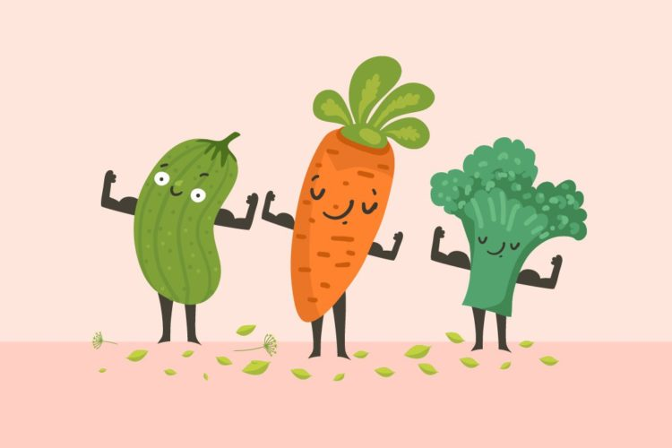
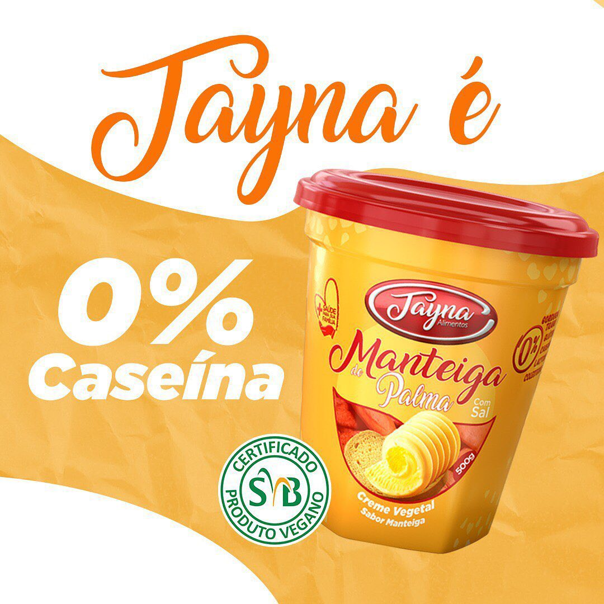
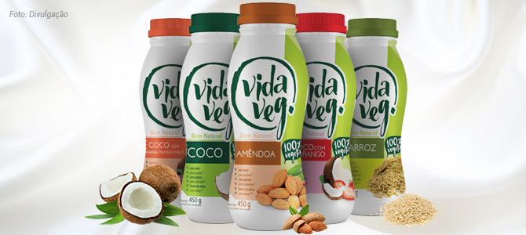

“A alma é a mesma em todas as criaturas vivas, embora o corpo de cada uma seja diferente."

Produtos veganos mais vendidos
Apesar de já ser um dos segmentos que mais apresentam popularidade no comércio, as pesquisas sobre o mercado vegano brasileiro ainda são escassas. Por conta disso, muitos empreendedores e especialistas se baseiam em relatórios e resultados internacionais.
Dentro do ramo alimentício, em 2021, o The Good Food Institute (GFI) e a Associação Norte-americana de Produtos Veganos (PBFA) mostraram que alguns campeões veganos de venda, quando comparados com o ano anterior, são:
Manteigas: a manteiga está presente na dieta de milhões de brasileiros e não é porque você mudou sua alimentação que precisa abolir este alimento. As manteigas veganas são ótimas opções, feitas com castanhas de caju, sem lactose e com vitaminas B6 e B12. Os cremes de castanha estão disponíveis nas versões tradicionais e ervas finas e pesto. Assim, você pode variar tanto na hora do café ou na preparação de receitas.

Queijos: aos amantes de queijo, essa não precisa ser uma preocupação quanto à dieta vegana. Afinal, temos opções de queijo muçarela inteiro ou fatiado, queijo parmesão ralado e queijo para preparo de fondue. Ou seja, você vai conseguir fazer uma boa variedade de receitas!
Leites vegetais: também são ricos em cálcio, tem zero lactose e zero açúcares. Muitas pessoas tendem a acreditar que a dieta vegana é pobre em nutrientes. No leite vegetal, existe a mesma quantidade de proteínas que no leite de vaca, por exemplo. Os leites vegetais estão disponíveis nas versões Coco e Amêndoas. Assim, você pode se manter saudável e consumindo alimentos ricos em proteínas e em sabor.
Iogurtes: se você ama iogurtes para comer no café da manhã ou comer no lanche da tarde, não precisa se preocupar: na nossa loja de produtos naturais, você encontra. Sejam para beber ou aqueles iogurtes gregos mais consistentes, de vários sabores. E o melhor: sem leite de origem animal, sem lactose e rico em cálcio. Sua dieta agradece!
